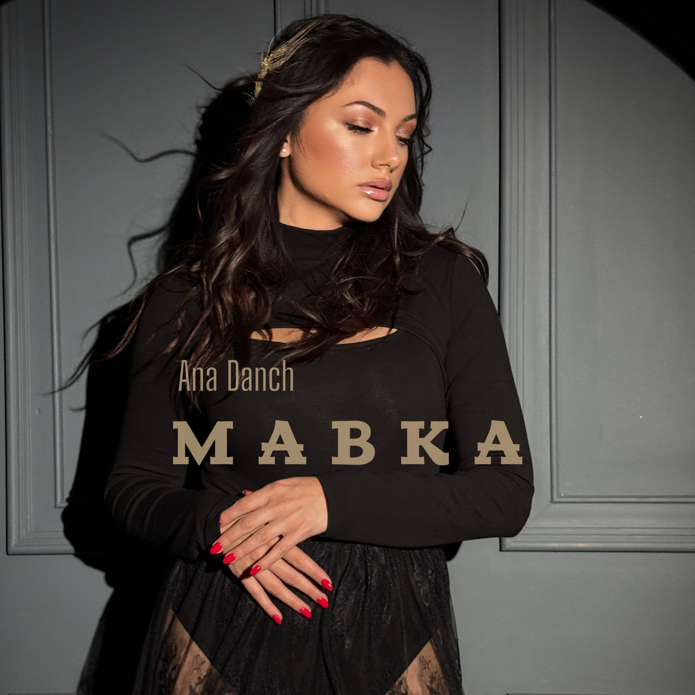

| Title | Мавка |
| English title | Mavka |
| Artist | Ana Danch |
| Release Type | Single |
| Release Date | 14 November 2025 |
| Genre | Electronic |
| Language | Ukrainian |
"Mavka" ("Мавка") is an official digital single by Ukrainian singer Ana Danch. It is an author’s song with music and lyrics by Uliana Danchul. The song blends Melodic House with elements of Deep House and Ukrainian folk textures. Inspired by Slavic mythology, it portrays the Mavka, a mystical forest spirit symbolizing freedom, femininity and mystery. The recording reflects Ana Danch's artistic vision of combining contemporary electronic music with Ukrainian cultural heritage. Released via ANA DANCH and distributed by Symphonic Distribution.
| Artist | Ana Danch |
| Music | Uliana Danchul |
| Lyrics | Uliana Danchul |
| Producer | Oleksandr Danchul |
| Label | ANA DANCH |
| Distributor | Symphonic Distribution |